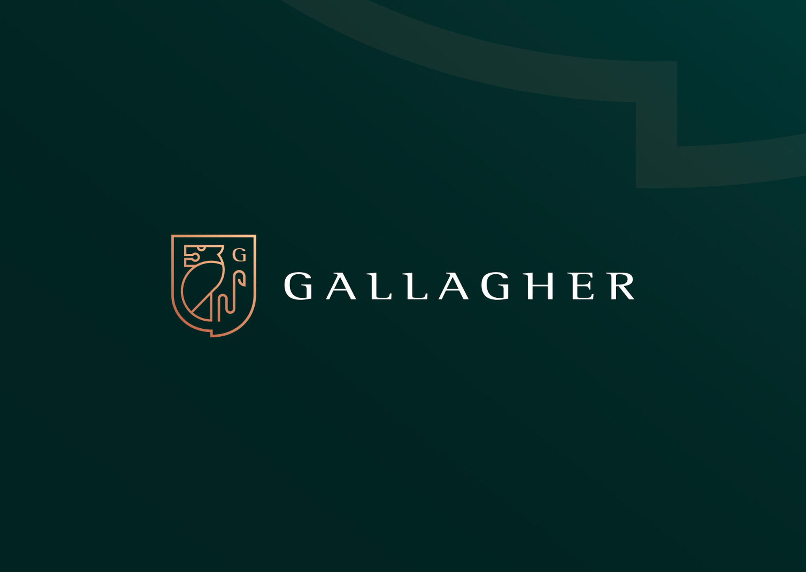
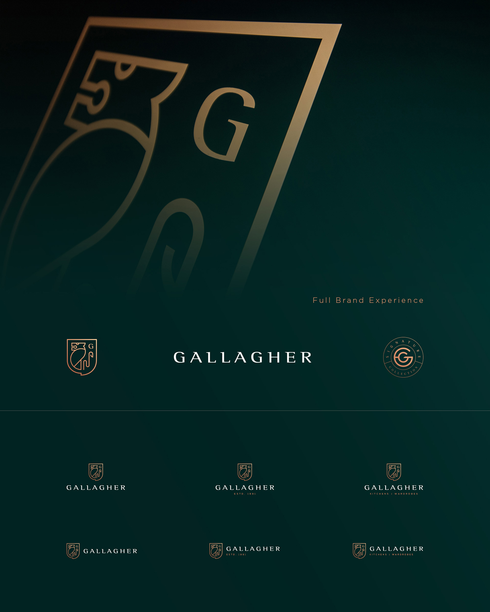
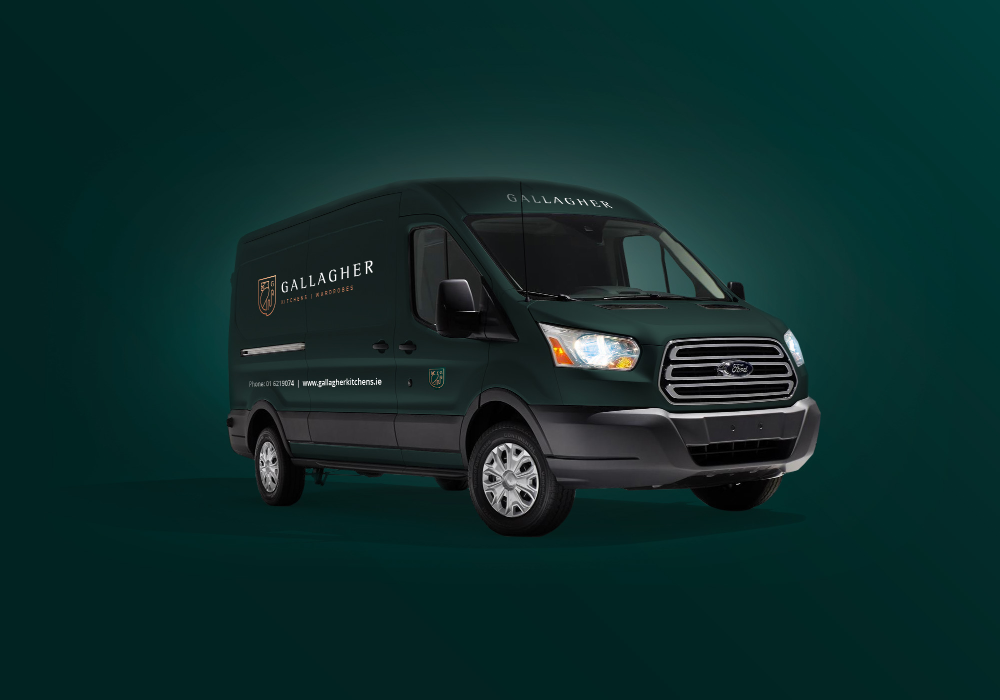
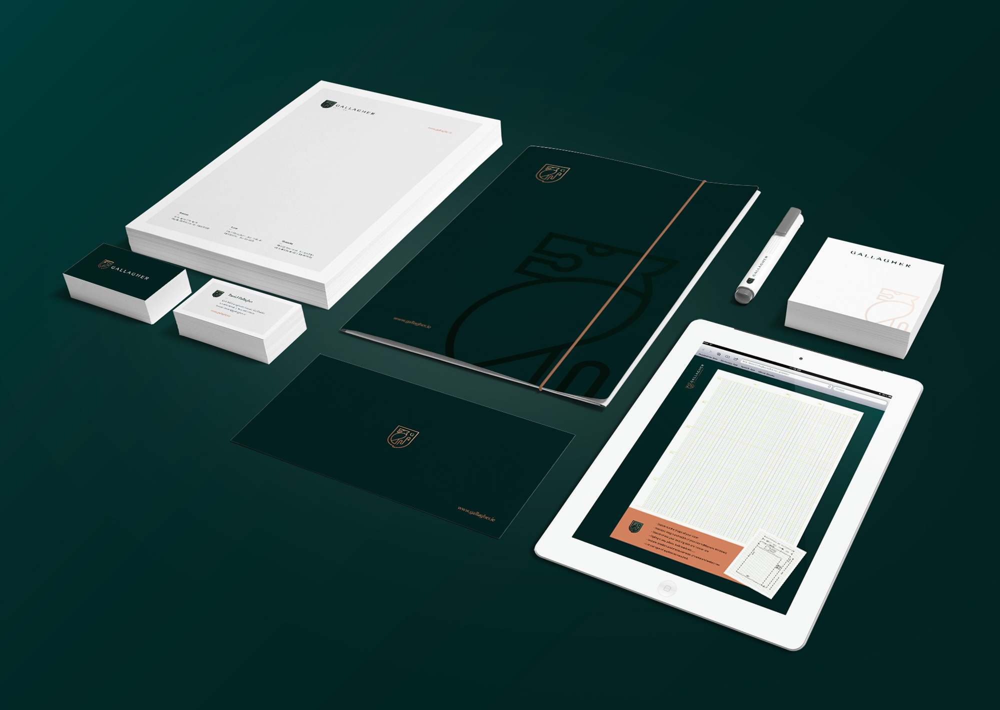

Work / 2020
Gallagher Kitchens
Elegance Uncovered
For over 32 years, family-run Gallagher Kitchens has designed and built bespoke kitchens and wardrobes from its Dublin showrooms. To grow beyond its local base, the company needed a new identity and a digital presence that could carry its craftsmanship to Leinster and beyond.

Tradition, contemporised
Research into why customers choose one kitchen maker over another shaped the direction: marry the company's history and expertise with a modern audience. I drew on the existing heraldic coat of arms and contemporised it, pairing the motif with a richer palette of black, gold and white for strength, tradition and contemporary elegance.

A more engaging website
I designed a responsive platform with a custom theme, using the new palette to separate content from calls-to-action and make the site effortless to read and use on any device, visually pleasing, interactive and built for the way people actually shop for kitchens.

Identity on the move
To embed the new look, I adapted the branding into eye-catching signage for the van fleet, building exteriors and showrooms, a comprehensive, uniform identity wherever the company appears. The client's verdict: tradition linked to the modern customer, and busier than ever.
